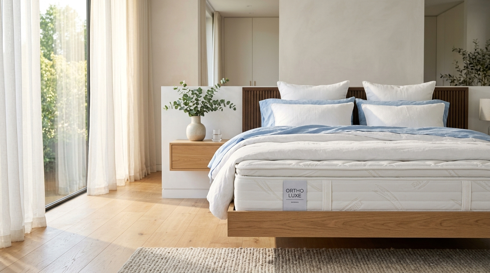
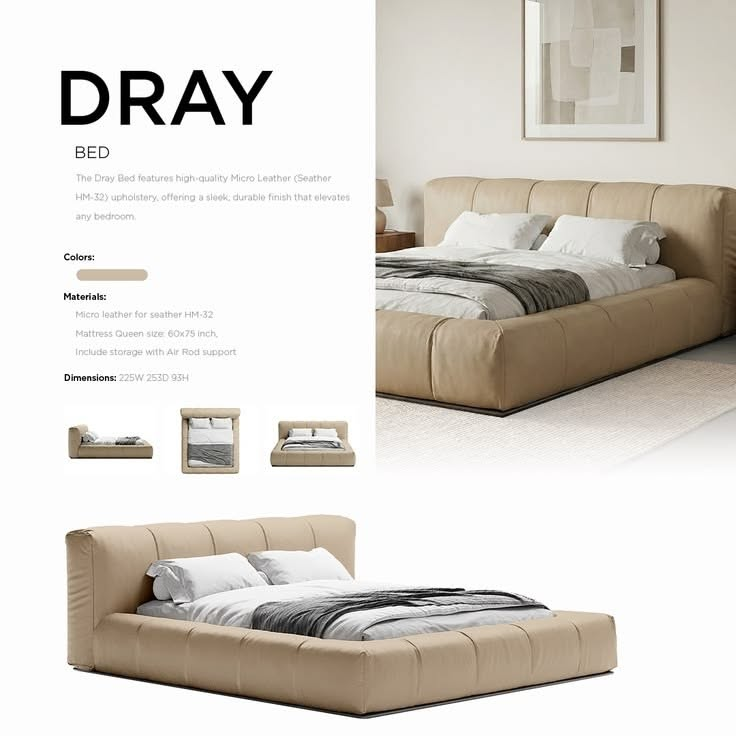

طراحی مهندسیشده،
سکوت و رهایی
در بستر خواب.
تلفیقی از ارگونومی پزشکی آلمان، فومهای ژلدار چندموج و ظرافت دوخت دستاستادکاران ایرانی. تولید مستقیم در کارگاه بدون تحمیل هزینههای واسطه نمایشگاهی.

DRAY
ORTHOPEDIC BED & MATTRESSتخت و تشک مدل «دِرِی» با بدنه چرم میکرولایت وارداتی، فوم سرد طبی ۳۵ کیلویی و سازه ارتوپدیک مهندسی شده؛ طراحی مینیمال ایتالیایی برای ایجاد حس آرامش و ریلکسیشن عمیق در اتاق خواب شما.
- رویه: چرم میکروفایبر تنفسی درجه یک (Leather Seather HM-32)
- هسته تشک: سیستم ارتوپدیک فنر منفصل با پد مموریفوم خنککننده
- ابعاد تشک: Queen: 160 × 200 cm (قابل سفارش در ابعاد دلخواه)
- کلاف باکس: چوب روس اشباعشده با جک گازی هیدرولیک بازشو

هر خواب آرامشبخش، لایههایی از مهندسی دارد
نگاهی عمیق به ۵ لایه تشکیلدهنده تشک طبی آریاخواب؛ تفکیک شده برای جذب فشار ستون فقرات و هدایت گرمای بدن به بیرون.
رویه فوقانی مواج کتان ارگانیک (Wave Cloud Top)
بافت پنبهای ابری و بسیار لطیف با منحنیهای مواج ارگونومیک؛ مانع هرگونه سایش پوست و حساسیتهای شبانه.
لایه مموریفوم ژلدار آبی آسمانی (Sky-Blue Cooling Wave)
تزریق ذرات هیدروژل خنککننده در بافت مموریفوم هوشمند. دمای سطح خواب را ۲ الی ۳ درجه کاهش میدهد تا از داغ شدن و تعریق جلوگیری کند.
اسفنج شانهتخممرغی زونبندی شده (Castellated Air Flow)
دندانههای مهندسیشده اسفنج، کانالهای جریان مداوم هوا را پدید میآورند و نقاط اتصال کمر و باسن را ماساژ ارتوپدیک میدهند.
هسته فوم ارتوپدیک با دانسیته بالا (High-Density HR Core)
پشتیبانی پایدار از مهرههای ستون فقرات؛ مانع از فرورفتگی بیشازحد بدن در تشک شده و تراز خنثی ستون مهره را حفظ میکند.
باکس فریم محافظ تحتانی (Base Encasement)
محفظه ضخیم پارچهای با دوخت چندسوزنه کارگاه که تمام لایهها را در موقعیت دقیق قفل کرده و عمر تشک را تضمین میکند.
تخت شما چه سایزی دارد؟
ما بر اساس سایز تخت شما و بدون دریافت هزینه مازاد، تشک را با فاکتور شفاف کارخانه آماده میکنیم.
تولید تخصصی بدون واسطه و بدون فریب تبلیغاتی
بیشتر برندهای پر زرق و برق، شرکتهای بازرگانی هستند که هزینه گزاف رهن مغازههای لوکس را روی قیمت نهایی تشک میکشند. کارگاه آریاخواب از سال ۱۳۸۸ با تولید مستقیم، متریال مرغوب اروپایی را با قیمت واقعی به دست شما میرساند.
مشاوره تلفنی با سرپرست کارگاه
قبل از خرید، با متخصص فنی ما مشورت کنید تا بهترین مدل را طبق شرایط وزنی و سلامت کمر شما پیشنهاد دهد:
تماس مستقیم: ۰۲۱-۸۸۸۸۹۹۰۰ پیام به واتساپ کارگاه: ۰۹۱۲-۱۱۱۲۲۳۳